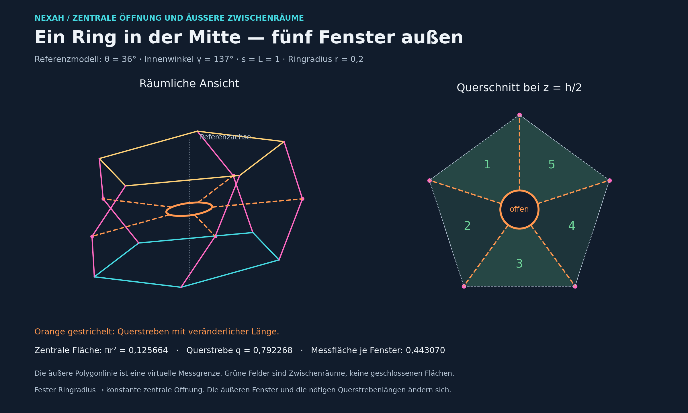
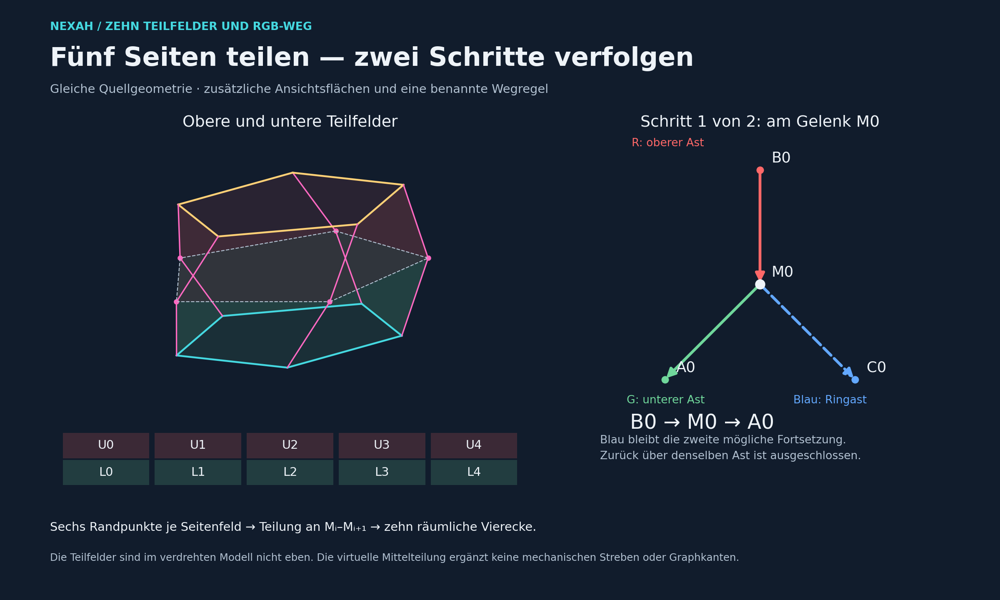
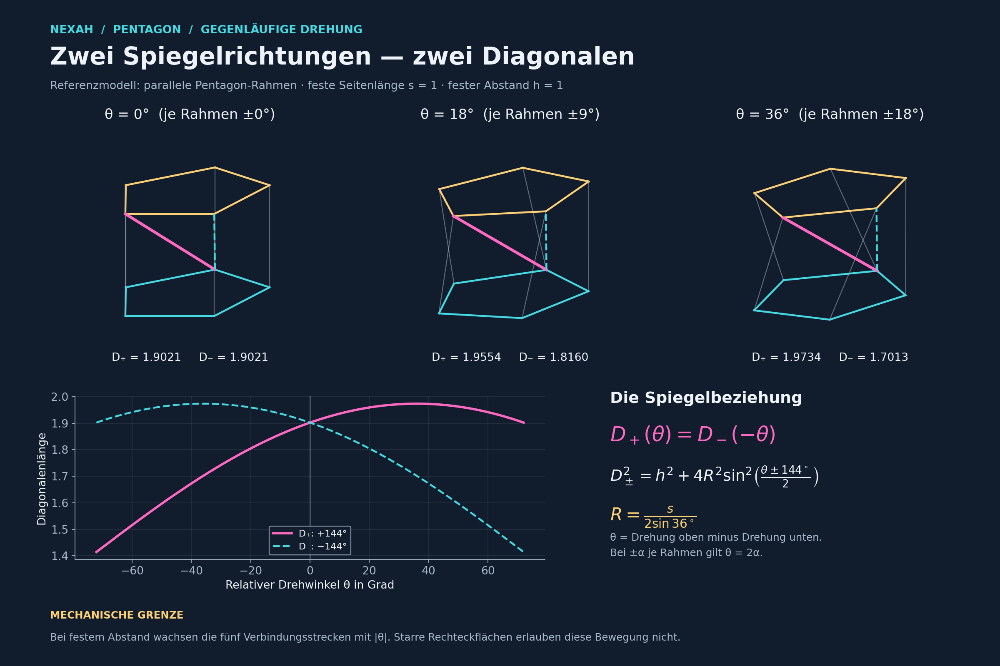

DIRECT · MEASUREMENT VIEW
Ein Ring, fünf Fenster.
Zentrale Öffnung und fünf virtuelle Messräume. Die grünen Flächen sind Zwischenräume, keine bereits geschlossenen Bauteile.
Visual groß ↗Eine gemeinsame Auslage für die Gelenklaterne, direkte Geometrieansichten, anschließbare Mathfield-Linsen und klar begrenztes 3D-Builder-Material.
Nur die ersten beiden Karten sind direkte Geometrieansichten. Die Gegenrotation bleibt Kontext und darf keine Mechanikbehauptung tragen.

Zentrale Öffnung und fünf virtuelle Messräume. Die grünen Flächen sind Zwischenräume, keine bereits geschlossenen Bauteile.
Visual groß ↗
Die obere und untere Teilung ergänzt eine lesbare Route. Sie registriert keine zusätzliche Graphkante und keinen neuen Operator.
Visual groß ↗
Eine legitime mathematische Vergleichslinse für die Rahmengeometrie. Kein Beleg für Curtain, Iris, Crown, Shadow oder einen Antrieb.
Kontext groß ↗Beide GLBs sind strukturell lesbar und animiert. Unabhängige Validierung und reproduzierbarer Source-Rebuild bleiben offen.
31 Nodes, vier Meshes und fünf Animationskanäle. Räumlicher Modellkandidat; Deckel, Antrieb und reale Gelenkdicken sind nicht integriert.
Return: Ausstellung zeigt · Science Desk klassifiziert · Builder Desk registriert · Custody hält Quelle und Prüfsumme.
Zum Science Return →